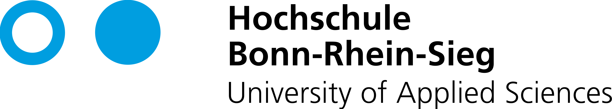

Kick-off Präsentation
PROJECT:
FLOWFORWARD
Gesunde Organisationsentwicklung.

×
Die Welt ist VUCA.
Transformation ist kein einmaliges Projekt mehr, sondern der permanente Modus Operandi aktueller Unternehmen.

"Du kannst die Wellen der Veränderung nicht aufhalten, aber du kannst lernen, auf ihnen zu surfen."
— Jon Kabat-Zinn [6]
Volatility (Volatilität)
Die Geschwindigkeit und Dynamik von Veränderungen nehmen extrem zu. Märkte, Technologien und Anforderungen schwanken stark. Für Mitarbeiter bedeutet das: Ständiger Anpassungsdruck.
Uncertainty (Unsicherheit)
Erfahrungen aus der Vergangenheit sind kein verlässlicher Indikator mehr für die Zukunft. Diese fehlende Vorhersehbarkeit löst im menschlichen Gehirn biologischen Stress und Kontrollverlust aus.
Complexity (Komplexität)
Systeme sind global vernetzt. Ursache und Wirkung sind nicht mehr linear nachvollziehbar. Das erfordert eine hohe kognitive Flexibilität, die unter Stress oft blockiert wird.
Ambiguity (Ambiguität)
Informationen sind oft mehrdeutig oder widersprüchlich. Es gibt kein einfaches "Richtig" oder "Falsch" mehr. Dies erfordert eine hohe psychologische Fehlertoleranz und Resilienz.
 ChangeCongress 2025
ChangeCongress 2025
Acht Thesen zur Zukunft des Change-Managements[2]
"Widerstand ist kein Problem – Gleichgültigkeit schon. Wer die Menschen nicht erreicht, verliert die Organisation."
Die Marktlage
Transformation als permanenter Modus.
Der methodische Werkzeugkasten reicht nicht mehr aus. Die menschliche Komponente ist das Nadelöhr der Zukunft.
Die individuelle Einstellung und die neurobiologische Verfassung des Mitarbeitenden (Stressresistenz) werden zum absolut kritischen Erfolgsfaktor.

Die Lösung zur Resilienz-Förderung
Studienpartner:
brainLight
Der Weltmarktführer für ganzheitliche Entspannungssysteme in Unternehmen. Die Mission: Mitarbeitende neurobiologisch stärken, um sie widerstandsfähiger für die VUKA-Welt zu machen.
Das Portfolio
brainLight Produkte im Überblick

Shiatsu-Massagesessel
Vollständige körperliche Entspannung durch tiefgehende Massage kombiniert mit audio-visueller Stimulation.

brainLight Mobil
Die portable Lösung. Ideal für flexible Arbeitsplätze, Home-Office oder Rückzugsräume ohne großen Platzbedarf.

Relax Station
Das ganzheitliche Premium-Setup für dedizierte Ruheräume im Corporate-Bereich. Maximale Abschirmung.